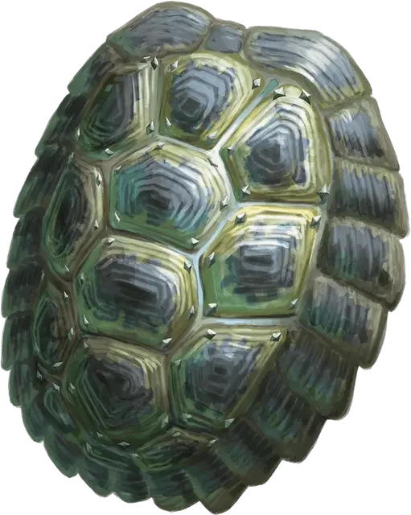

Щит черепахи
Shield of the Tortoise
Доспех (щит), необычный (требуется настройка)

Рекомендованная стоимость 101-500 зм
Держа этот щит, вы получаете бонус +1 к КД. Этот бонус является дополнением к обычному бонусу щита к КД.
Проклятие. Этот предмет проклят. Настроившись на него, вы тоже становитесь проклятым, пока на вас не используют заклинание снятие проклятия [remove curse] или подобную магию. Вы не можете сбросить щит и оставаться настроенным на него, пока вы прокляты. Пока вы прокляты, вы медлительны. Ваша скорость уменьшается вдвое. Когда вы бросаете инициативу, считайте результат на своем к20 равным «1». Вы не можете изменить свою инициативу никакими способами.